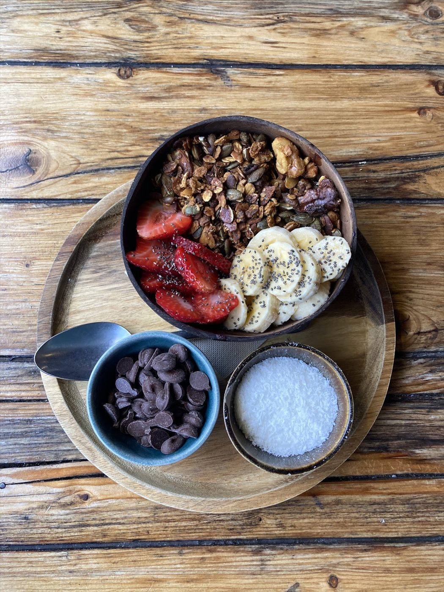
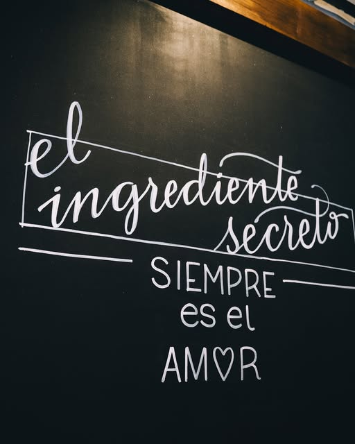
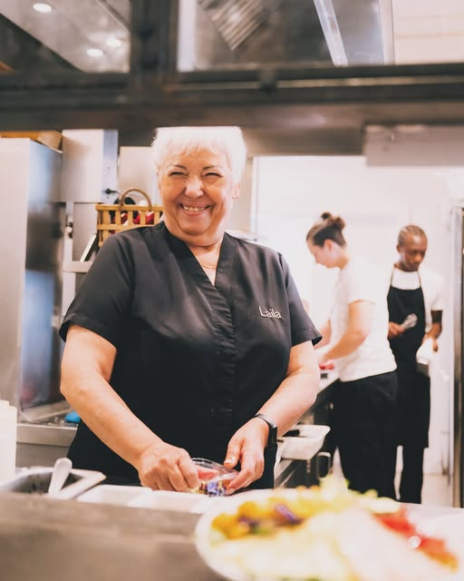
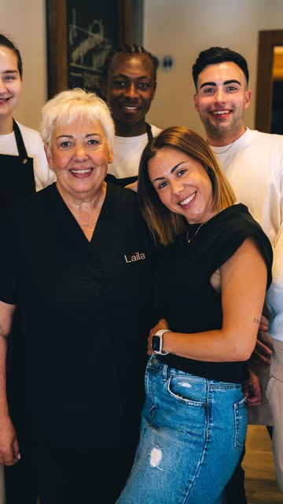
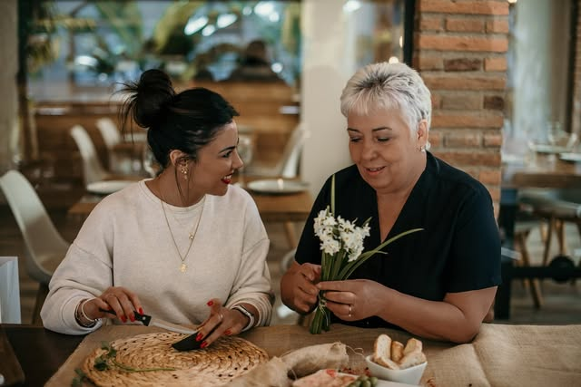
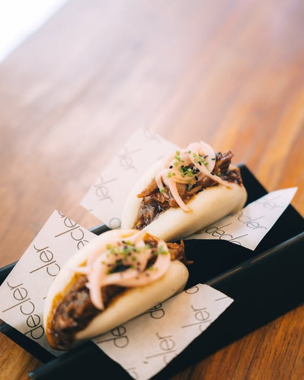
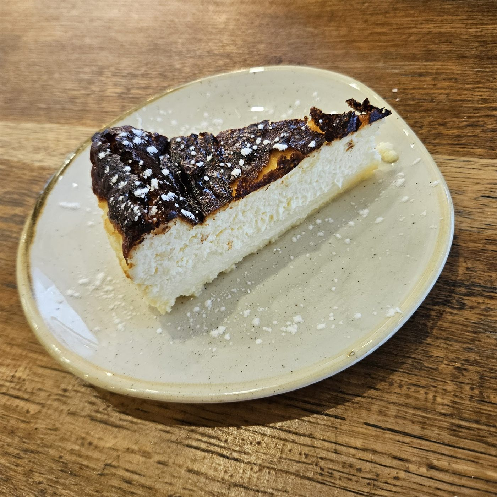
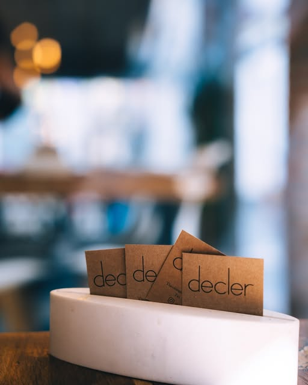
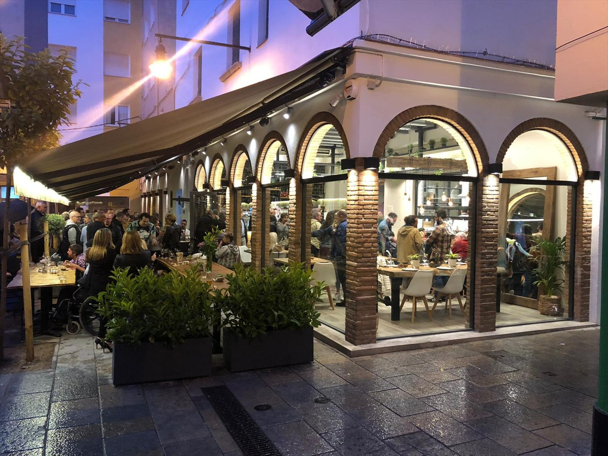

Açaí
Nuestro bowl más pedido, con fruta y granola crujiente.
Brunch · de díaTapeo · de noche
la gastronomía de siempre
Açaí, granola y café bajo los arcos de la calle Theolongo Bacchio. Mañanas lentas, como tienen que ser.Bravas de Laila, croquetas caseras, arroz con bogavante y una terraza que invita a quedarse hasta medianoche.
4,1★ · 975 opiniones en Google · 20–30 € por persona
El tiempo pasa mientras bajas ↓

Nuestra receta
En Decler se cocina como en casa: sin prisas, con producto de aquí y con recetas que pasan de mano en mano. Por eso nuestra carta suena a lo de siempre, y por eso siempre apetece volver.



Carta de díaCarta de tapeo

Nuestro bowl más pedido, con fruta y granola crujiente.

Panes rellenos y bocados para compartir a media mañana.

Casero, cremoso y con su cobertura. El final perfecto.

El imprescindible de cada visita. Con calma, en la terraza.
Momentos Decler

La terraza
«La terraza exterior, genial. Estuvimos muy anchos y cómodos. El ambiente muy tranquilo.»
Begoña Lozano · Google
975 opiniones en Google
«Muy buena relación calidad precio, comimos menú y carta, todo muy bueno y rico. Los huevos estrellados espectaculares, el arroz con bogavante, increíble.»Javier Caballero · ★★★★★
«Hacía mil años que no tomaba un fernet tan rico! […] El jefe nos sacó unos choripanes de 10 puntos.»Agus · ★★★★★
«Su cocina exquisita e innovadora que te invita a repetir.»Opinión destacada en Google